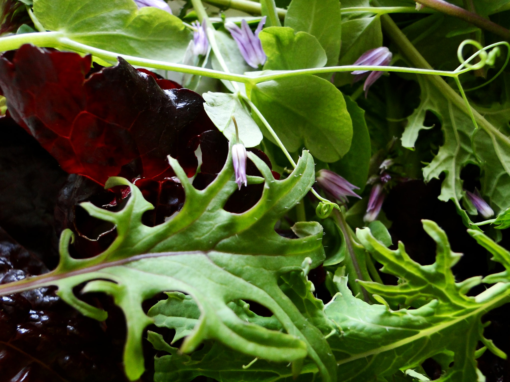

Phasellus convallis ullamcorper nisl id interdum. Curabitur rhoncus ornare augue, vitae posuere justo facilisis quis. Praesent lobortis commodo tellus, eget posuere eros condimentum ut. Fusce congue ligula ac nibh malesuada rhoncus.
Praesent malesuada augue sit amet nibh interdum sed porttitor quam accumsan. Duis justo eros, sagittis eget auctor ac, lobortis non massa. Aenean metus leo, convallis a consequat ut, imperdiet eget erat.
